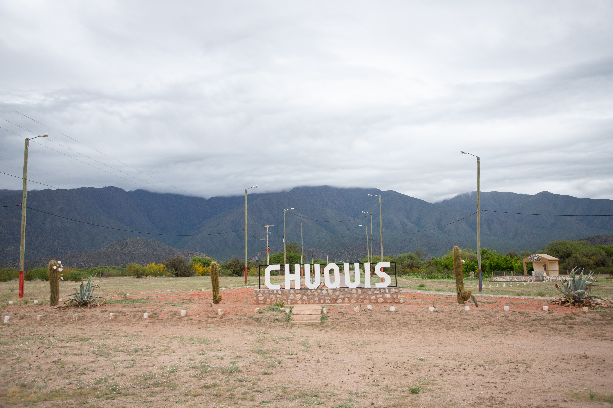
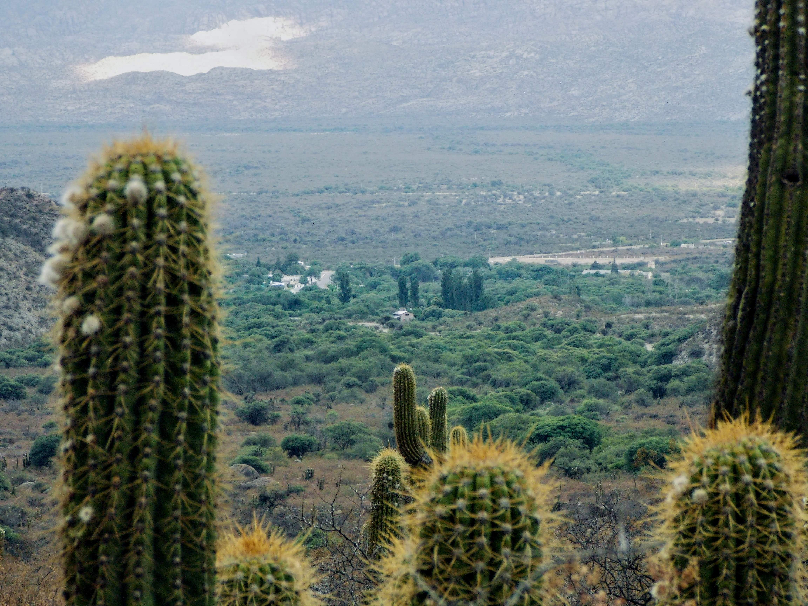
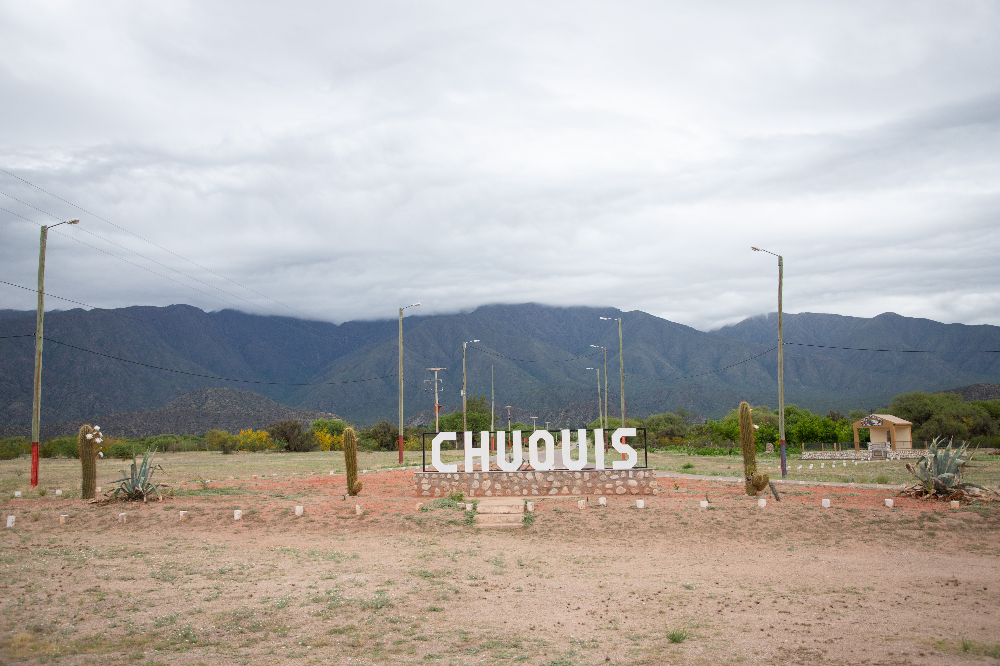
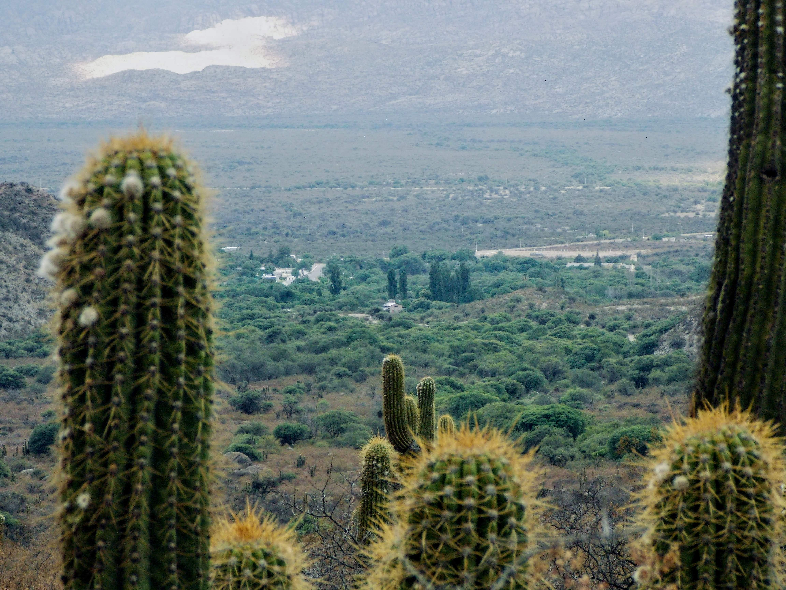

Sobre Chuquis
Chuquis es un pintoresco pueblo riojano, cuenta con 236 habitantes (Indec, 2010). Es reconocido por su valioso legado histórico, su iglesia dedicada a la Virgen del Rosario y por ser la cuna de Pedro Ignacio de Castro Barros. Se presume que el primer asentamiento español en la zona se estableció en el sector sur, donde en 1777 nacería Castro Barros, hijo dilecto de Chuquis, sacerdote y diputado que representó a La Rioja en el histórico Congreso de Tucumán. En su memoria, se erigió un Museo Histórico en el solar de su casa natal, constituyéndose en un sitio de referencia cultural y patrimonial para toda la región. Cuenta con un centro de atención primaria en salud, un Jardín de Infantes Núcleo N°7 Extensión y una biblioteca pública.
Puntos de Interés
Solar y Museo histórico Castro Barros
En homenaje a Don Pedro Ignacio de Castro Barros, sacerdote, educador, independentista, miembro de la Asamblea General Constituyente y Soberana del año 1813 y primer diputa, el museo fue fundado con el propósito de conservar las ruinas de su casa natal y difundir su vida y su obra. De la construcción original, que data de mediados del siglo XVIII, solo quedan paredes de tapiales de lo que sería una sala y una puerta.
La Yacurmana
La Yacurmana en Chuquis es el nombre de una cascada y por extensión, de una leyenda de la diosa Madre del Agua, asociada a la fuerza de la naturaleza y la fertilidad, que habitaba en las montañas de la Sierra de Velasco, La Rioja, y de cuya manifestación se dice que ocurre tras intensas lluvias.
Iglesia Virgen del Rosario
La Iglesia Nuestra Señora del Rosario en Chuquis es un templo colonial en la provincia de La Rioja, Argentina, reconocido por su importancia religiosa y cultural. Es el centro de una comunidad que celebra sus fiestas patronales, es un punto de peregrinaje en los Llanos y resguarda una imagen de la Virgen del Rosario con una rica historia, ligada a la presencia dominica en la región.
Galería

 


